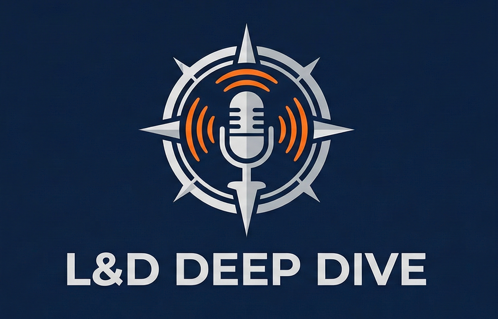
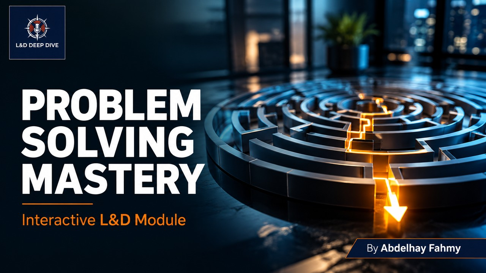

L&D DEEP DIVE
Welcome to this micro-learning module.
Patient delays are just one example of daily business challenges.
A powerful visual framework to brainstorm and categorize potential causes systematically.
Maps out the entire process until the true root cause is exposed, eliminating guesswork.
Scenario: High rate of dropped calls in the appointment center.
Ask "Why?" repeatedly (typically 5 times) to peel back the layers.
Example: Why did the server crash? ➔ Why wasn't it updated? ➔ (Root Cause Discovered)
Task: Sequence these events from Surface Problem (1) to Root Cause (5).